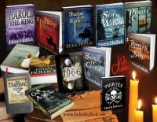

Fab historical writers – Helen Hollick
If readers of historical fiction, especially those whose tastes run to the medieval, haven’t found Helen Hollick yet then all I can say is thank heavens you’re reading this! Helen has been a bit of an authority on all things 1066 from long before I ever considered writing about that fateful year and her books, Harold the King and The Hollow Crown were some of my first reads in this period – and still some of my best. I confess, with shame, that I haven’t yet read her Arthurian trilogy (sacrilege for someone who part-specialised in Arthurian literature at university) but it is now firmly on my ever-growing reading list. I, too, like my Arthur ‘real’ with more battles than wizards, so can’t wait to get stuck in.
 Recently I’ve had the pleasure of working with Helen on our project 1066 Turned Upside Down and found her an inspiration. The mad idea was mine, discussed over a well-deserved glass of red after a long day at the book-selling coalface in Battle Abbey, but the drive and passion to make it happen was Helen’s. I will always be grateful for that as it is a collection I am very proud of and that has introduced me to lots of talented writers. If you haven’t dipped into our alternative stories yet then do give it a try- find it here.
Recently I’ve had the pleasure of working with Helen on our project 1066 Turned Upside Down and found her an inspiration. The mad idea was mine, discussed over a well-deserved glass of red after a long day at the book-selling coalface in Battle Abbey, but the drive and passion to make it happen was Helen’s. I will always be grateful for that as it is a collection I am very proud of and that has introduced me to lots of talented writers. If you haven’t dipped into our alternative stories yet then do give it a try- find it here.
But now to Helen’s books. The Kingmaking, Pendragon’s Banner and Shadow of the King - her Arthurian Trilogy - is about, well, King Arthur - *laugh*. You’ll find no myth or magic, though. No Holy Grail, Lancelot, Castle of Camelot and not even Merlin. She set her story in post-Roman Britain and her Arthur is a rough, tough, warlord who had to fight hard to gain his kingdom, and even harder to keep it. Her one concession was to give him the title ‘King’ which is more of an English, not Roman or British word. It is a term we are all familiar with, though.
Following these Helen wrote Harold the King (titled I Am the Chosen King in the US) which is the story of the people and events that led to the Battle of Hastings in 1066. She then wrote its prequel, A Hollow Crown (titled The Forever Queen in the US) the story of Queen Emma and her two husbands, King Æthelred the Unready and Cnut – Canute, he of Hold the Tide Back fame. Forever Queen, to her delight became a USA Today Bestseller.
From there she started her nautical adventure Sea Witch Voyages. At present there are five, with another planned.: Sea Witch #1 Pirate Code #2, Bring It Close (which features Blackbeard)#3, Ripples in the Sand #4 and On the Account #5. Gallows Wake will be Voyage six. And she’s also recently released Pirates Truth and Tales, a non-fiction book about pirates told via, yes you’ve guessed it, truth and tales!
So that’s Helen’s books but what about Helen as an author? Let’s find out more:
Why and how did you become a writer? I’ve always wanted to write, well, since teenage days that is. I was lucky enough to become friends with the great Sharon Kay Penman who helped me turn the first chapter of my very rough draft of what eventually became The Kingmaking, into something at least readable. She also introduced me to her agent, who passed me on to William Heinemann. That was more than twenty years ago now, there’s been a lot of words bashed out from several successive keyboards since then!
Did you ever consider using a pen name? I considered it for my Sea Witch Voyages, because they are different in content and genre to my ‘straight’ historical fiction, in that this series has an element of fantasy to the adventures. However, my name was already established so I decided to stick with it as a ‘brand name logo’. I think I made the right choice.
What’s your favourite thing about being a writer? Meeting wonderful readers and other writers from near and far. That’s the icing on the cake for me.
And your least favourite? Sadly, it is intricate research. I love the pleasure of finding new and intriguing things while researching the facts behind a potential novel or various scenes, but alas, my sight is fading and I now find reading, especially the smaller print of non-fiction quite a struggle, so the pleasure has gone because it has become somewhat difficult to undertake.
You’ve written in several periods, but what drew you to those particular ones? Arthur because out of the blue I discovered that if he had been a real person ( I stress the if…) he would have existed circa 450-500 AD way before the later Medieval legends which place him as a knight in armour, a theme which I confess, I have never liked or felt comfortable with. Placing him as post-Roman, however, made such good sense so I had to write that story. Harold I wrote because I lived (then) near Waltham Abbey which he is, even now, strongly connected with, and A Hollow Crown had to be written because I ‘met’ Queen Emma while writing Harold. I found her so fascinating I thought she deserved her own novel. As for Captain Jesamiah Acorne and the Sea Witch Voyages… well, who doesn’t love a rogue of a pirate?
Are there any other periods in history you fancy tackling? I might go back to post-Roman Britain. I have an idea for an adventure/mystery set at the time of my Arthurian Trilogy as a spin-off series. All I need is to find the time…
What do you think is the appeal of historical fiction? It is our past. History is in our genes, even if we do not realise it. Think about it, our direct ancestors were alive when Ancient Greece and Rome were at their height, when 1066 happened, when Henry VIII beheaded Anne Boleyn, when the first steam trains rain along the first iron tracks – when Jane Austen was writing Pride and Prejudice, when Victoria met and fell in love with Albert. Maybe our ancestors were, for various reasons, unaware of these events, or maybe they were witnesses to some of them, but the whole point is they were alive at that time. If they weren’t… well, we wouldn’t be here would we? So through our genes we have a connection, a link to the past. Our past.
If there was one thing in history you could change what would it be? There are several close to my heart, the outcome of the Battle of Hastings for one, but maybe I’d take a slight step back in time from 1066 – I wish King Cnut had lived and reigned longer. I think he was a good, capable, King. Although he was Danish his contemporaries said that he was ‘more English than the English’. I wish he could have reigned for much longer, I think he would have been good for England. Alas, he died far too early in life.

You can find out more about Helen’s books via amazon and connect with her on her website, facebook page, or via twitter. Read her own excellent blogs here, sign up for her newsletter here, or pop onto my facebook page to discuss anything in this feature.